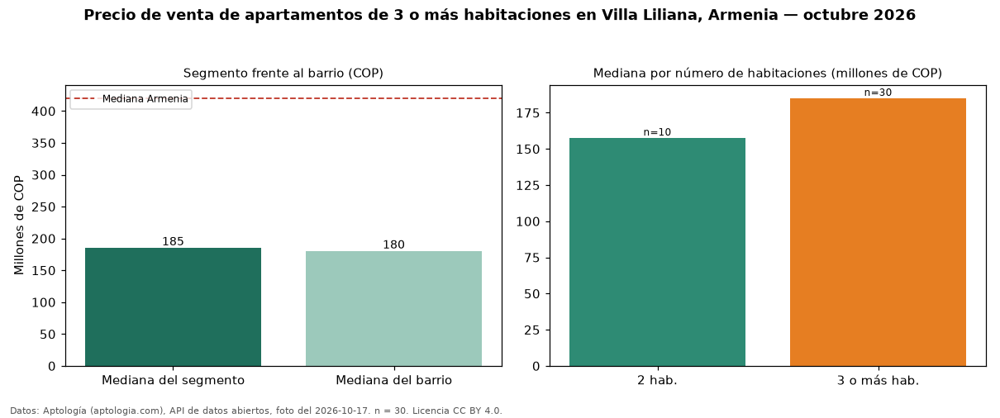

Precio de venta de apartamentos de 3 o más habitaciones en Villa Liliana, Armenia — octubre 2026
En Villa Liliana, Armenia, la mediana de precio de venta de apartamentos de 3 o más habitaciones es COP 185 millones, según 30 avisos vigentes. Eso la ubica 56 % por debajo de la mediana de Armenia para apartamentos de 3 o más habitaciones (COP 420 millones). Son 73 % de los 41 avisos de apartamentos en venta del barrio, cuya mediana general es COP 180 millones (+3 %). En el mismo barrio, la mediana es COP 158 millones con 2 habitaciones (n = 10). Datos: Aptología (aptologia.com), API de datos abiertos, licencia CC BY 4.0 — https://www.aptologia.com/venta/armenia/villa-liliana. Archivos: PDF de 2 páginas, CSV con las cifras y gráfica PNG.

| Avisos únicos | 30 |
|---|---|
| Percentil 25 | — |
| Mediana | COP 185.000.000 |
| Percentil 75 | — |
Fuente: avisos vigentes de portales inmobiliarios recopilados por Aptología, deduplicados (mínimo 30 avisos únicos por celda). Precios pedidos, no cerrados. Fecha: 2026-10-18.